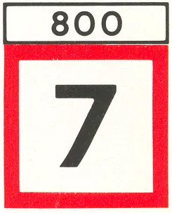
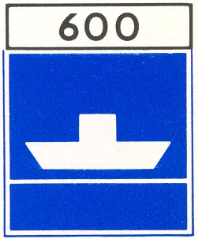
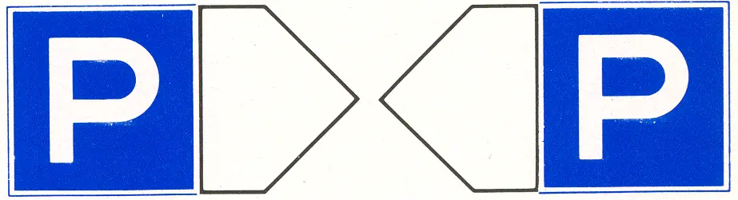
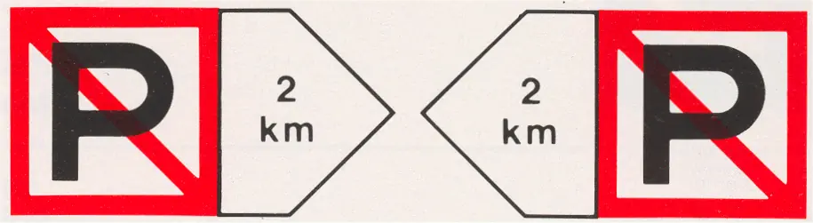
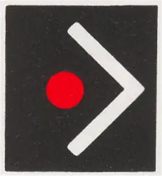
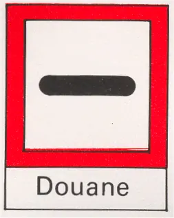
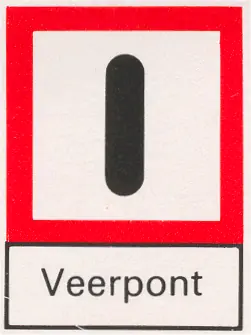
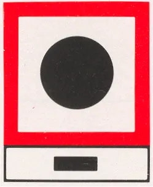
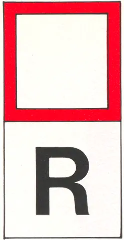
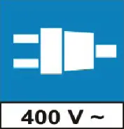

AFDELING II
Rijnvaartpolitiereglement 1995
Toegevoegde borden of opschriften
De tekens van afdeling I kunnen worden aangevuld door toegevoegde borden of opschriften: | ||
1. | Borden, vermeldende de afstand na welke het voorschrift of de bijzonderheid, aangeduid door het hoofdteken, van belang is. De borden worden boven het hoofdteken aangebracht. Voorbeelden: | |
Maximum snelheid 7 km/u ingaande na 800 m |  | |
Niet-vrijvarende veerpont na 600 m |  | |
2. | Pijlen die het riviervak aanduiden waarop het hoofdteken betrekking heeft. Voorbeelden: | |
 | ||
a. Ligplaats nemen toegestaan. | ||
 | ||
b. Ligplaats nemen verboden (over 2000 m). | ||
c. Invaren van een haven of nevenvaarweg gelegen in de richting van het rode licht A.1 en de verlichte pijl is verboden (Artikel 6.16 lid 4). |  | |
3. | Borden met aanvullende verklaringen of aanwijzingen. Deze borden worden onder het hoofdteken aangebracht. Voorbeelden: | |
Halt! Douane |  | |
Opletten: veerpont. |  | |
Geef één lange stoot. |  | |
Rede. (artikel 14.01, lid 1) |  | |
Aansluiting voor 400 V~ beschikbaar |  |